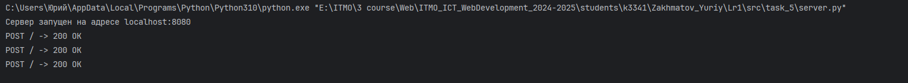
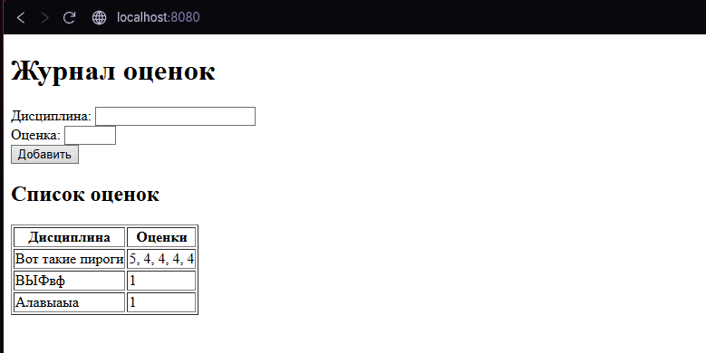

Задание 5
Задание 5¶
Содержание: Написать простой веб-сервер для обработки GET и POST HTTP-запросов с помощью библиотеки socket в Python.
Требования: Сервер должен: 1. Принять и записать информацию о дисциплине и оценке по дисциплине. 2. Отдать информацию обо всех оценках по дисциплинам в виде HTML-страницы.
Выполнение:
- Создаем скрипт для сервера:
import socket
import threading
import http.client
from urllib.parse import parse_qs, unquote
import os
DATA_FILE = "grades.txt" # Храним данные
class MyHTTPServer:
def __init__(self, host, port):
self._host = host
self._port = port
self._grades = self.load_grades() # словарь {предмет: [оценки]}
# Загрузка данных из файла
def load_grades(self):
if not os.path.exists(DATA_FILE):
return {}
grades = {}
with open(DATA_FILE, "r", encoding="utf-8") as f:
for line in f:
if ";" in line:
subject, grades_str = line.strip().split(";", 1)
grades[subject] = grades_str.split(",")
return grades
# Сохранение данных в файл
def save_grades(self):
with open(DATA_FILE, "w", encoding="utf-8") as f:
for subject, grade_list in self._grades.items():
f.write(f"{subject};{','.join(grade_list)}\n")
# Запуск сервера
def serve_forever(self):
server = socket.socket(socket.AF_INET, socket.SOCK_STREAM)
try:
server.bind((self._host, self._port))
server.listen()
print(f"Сервер запущен на адресе {self._host}:{self._port}")
while True:
try:
conn, addr = server.accept()
client_thread = threading.Thread(target=self.serve_client, args=(conn,), daemon=True)
client_thread.start()
except socket.timeout:
continue
except KeyboardInterrupt:
break
except Exception as e:
print(f"Ошибка при принятии подключения: {e}")
finally:
print("Сервер останавливается...")
server.close()
# Обработка клиента
def serve_client(self, conn):
try:
req = self.parse_request(conn)
resp, status_code = self.handle_request(req)
self.send_response(conn, resp)
self.log_request(req, status_code, http.client.responses[status_code])
except ConnectionResetError:
conn = None
except Exception as e:
self.send_error(conn, e)
if conn:
conn.close()
# Разбор HTTP-запроса
def parse_request(self, conn):
rfile = conn.makefile('rb')
request_line = rfile.readline().decode('iso-8859-1').strip()
if not request_line:
raise ValueError("Пустая строка запроса")
method, path, version = request_line.split()
headers = self.parse_headers(rfile)
content_length = int(headers.get('Content-Length', 0))
body = rfile.read(content_length).decode('utf-8') if content_length else None
rfile.close()
return {
'method': method,
'path': path,
'version': version,
'headers': headers,
'body': body
}
# Разбор заголовков
def parse_headers(self, rfile):
headers = {}
while True:
line = rfile.readline().decode('iso-8859-1').strip()
if not line:
break
if ':' in line:
header_name, header_value = line.split(":", 1)
headers[header_name.strip()] = header_value.strip()
return headers
# Обработка запроса
def handle_request(self, req):
if req['method'] == 'GET' and req['path'] == '/':
return self.build_response(200, self.render_grades())
elif req['method'] == 'POST' and req['path'] == '/':
body = req['body']
if body:
params = parse_qs(body)
subject = unquote(params.get('subject', [''])[0]).strip()
grade = unquote(params.get('grade', [''])[0]).strip()
if subject and grade:
if subject not in self._grades:
self._grades[subject] = []
self._grades[subject].append(grade)
self.save_grades()
return self.build_response(200, self.render_grades())
return self.build_response(400, "Неверные данные")
else:
return self.build_response(404, "Страница не найдена")
# Формирование ответа
def build_response(self, status_code, body):
response_line = f"HTTP/1.1 {status_code} {http.client.responses[status_code]}\r\n"
headers = "Content-Type: text/html; charset=utf-8\r\n"
headers += f"Content-Length: {len(body.encode('utf-8'))}\r\n"
headers += "Connection: close\r\n\r\n"
return response_line + headers + body, status_code
def send_response(self, conn, resp):
conn.sendall(resp.encode('utf-8'))
def send_error(self, conn, err):
resp, _ = self.build_response(500, f"Ошибка сервера: {err}")
self.send_response(conn, resp)
conn.close()
# Отображение HTML
def render_grades(self):
html = """
<!DOCTYPE html>
<html lang="ru">
<head>
<meta charset="UTF-8">
<title>Журнал оценок</title>
</head>
<body>
<h1>Журнал оценок</h1>
<form method="POST" action="/">
<label>Дисциплина: <input type="text" name="subject" required></label><br>
<label>Оценка: <input type="number" name="grade" min="1" max="5" required></label><br>
<button type="submit">Добавить</button>
</form>
<h2>Список оценок</h2>
"""
if self._grades:
html += "<table border='1'><tr><th>Дисциплина</th><th>Оценки</th></tr>"
for subject, grades_list in self._grades.items():
grades_str = ", ".join(grades_list)
html += f"<tr><td>{subject}</td><td>{grades_str}</td></tr>"
html += "</table>"
else:
html += "<p>Оценок пока нет</p>"
html += "</body></html>"
return html
def log_request(self, req, status_code, status_text):
print(f"{req['method']} {req['path']} -> {status_code} {status_text}")
if __name__ == '__main__':
HOST = 'localhost'
PORT = 8080
serv = MyHTTPServer(HOST, PORT)
serv.serve_forever()
2. Пример работы¶

